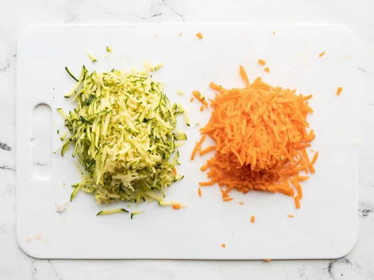
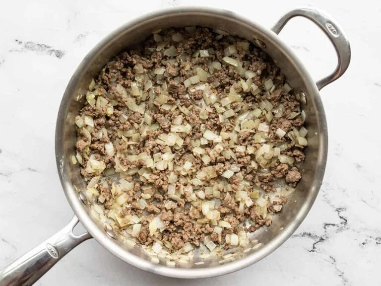
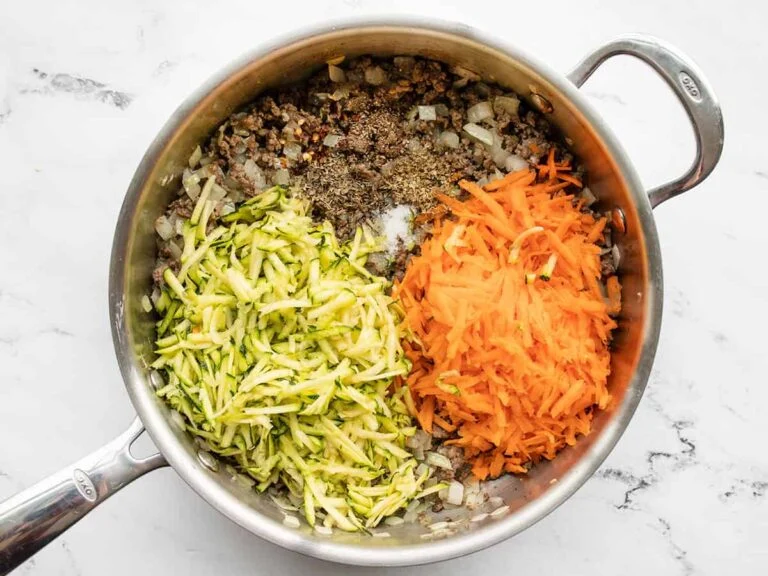
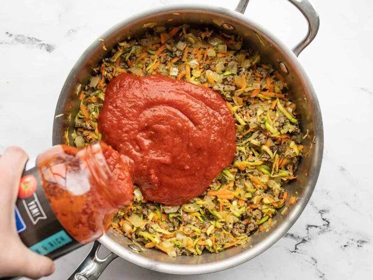
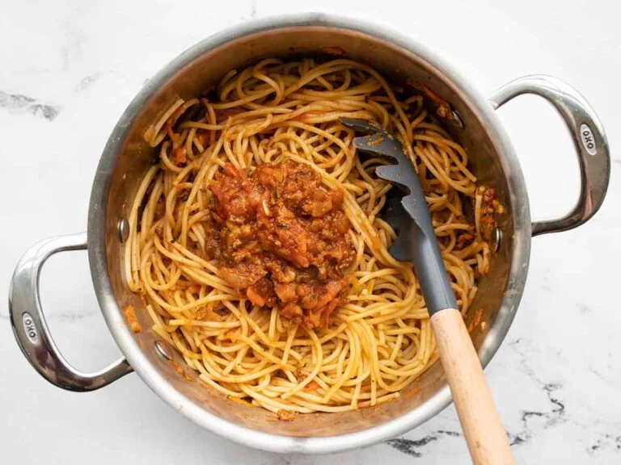

1. Use a cheese grater to grate the zucchini and carrots. You'll want about 1.5 cups of each, but the amount is flexible. Dice the onion and mince the garlic.

2. Add the olive oil and ground beef to a large, deep skillet. Cook the ground beef over medium heat until it is fully browned. Add the diced onion and garlic and continue to sauté a few minutes more, or until the onions are soft and translucent.

3. Add the shredded zucchini and carrots to the skillet along with the basil, oregano, salt, freshly cracked pepper, and a pinch of red pepper. Continue to sauté until the vegetables are wilted (about five minutes).

4. Add the pasta sauce to the skillet and stir to combine. Allow the contents of the skillet to come up to a simmer, then turn the heat down to low and simmer the sauce as you prepare the spaghetti. Stir the sauce occasionally as it simmers.

5. Cook the spaghetti according to the package directions, then drain in a colander. Return the drained spaghetti to the pot with the heat turned off. Add one cup of the prepared sauce to the pasta and stir to coat. Divide the pasta into serving bowls and top with additional sauce.

Photos and Recipe from Budget Bytes Spaghetti With Hidden Vegetable Pasta Sauce